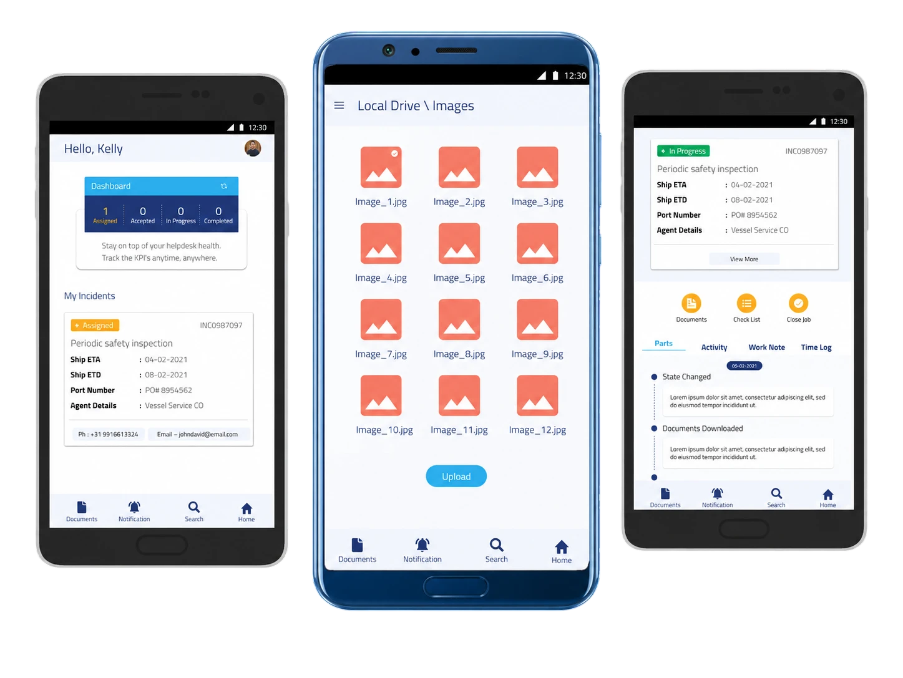

MR Marine helps maritime teams manage onsite operations, communication, shipment visibility, and field productivity from a simple mobile-first workflow.

The maritime industry faced persistent challenges, including fragmented supply chain processes and ineffective communication channels. MR Marine recognized the need for a comprehensive solution to streamline operations, improve efficiency, and enhance collaboration among stakeholders.
The MR Marine App brought about transformative changes in the maritime sector.
The app streamlined supply chain management processes, resulting in improved efficiency and reduced operational costs.
By providing shared reporting capabilities, the app facilitated better communication and collaboration among stakeholders.
Stakeholders gained access to real-time data and analytics, enabling informed decisions and faster responses to changing market conditions.
Automation of manual tasks and optimization of workflows led to increased productivity and resource optimization.